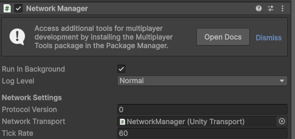
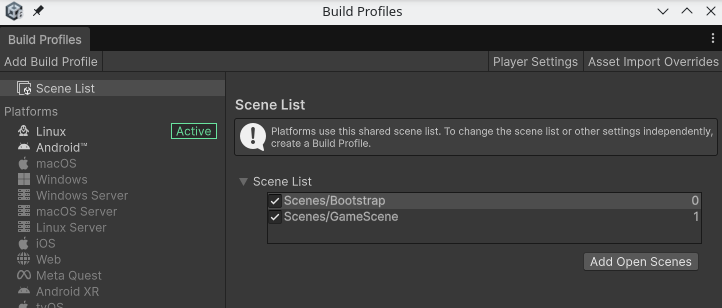
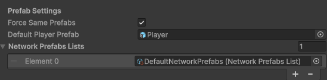
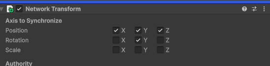
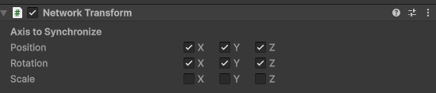
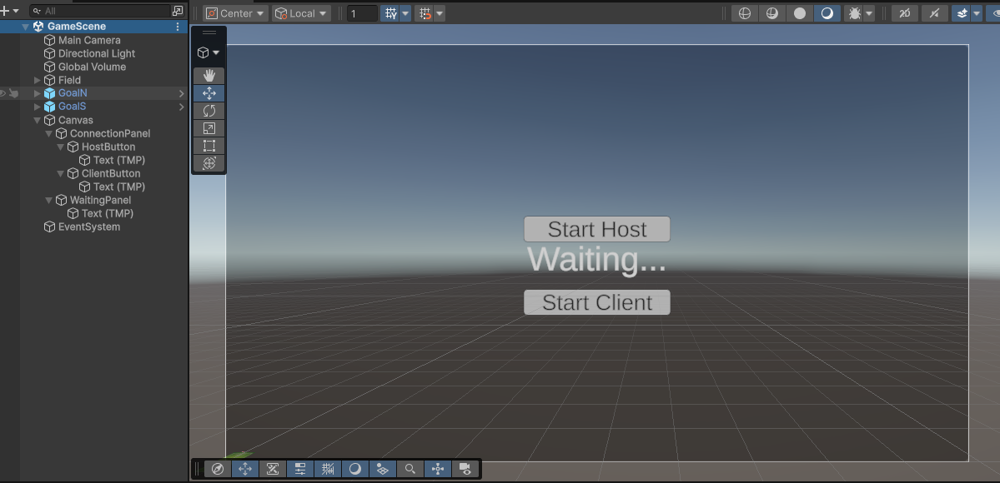
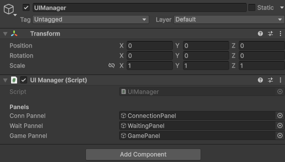
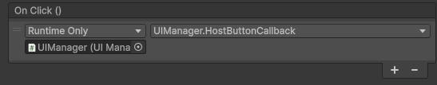
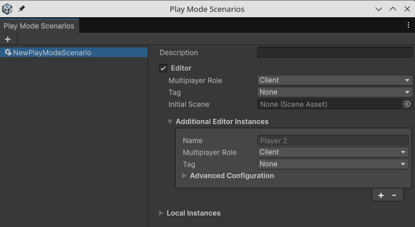

3.2 Joc en xarxa amb Netcode
En aquesta secció, explorarem com crear un joc en xarxa utilitzant Netcode for GameObjects. Afegirem les capacitats de xarxa a un joc de futbol en 3D.
Pot descarregar el projecte de referència des d'aquest enllaç: Netcode Football Base.
Preparar el projecte
El primer pas és preparar el projecte de Unity per a l'ús de Netcode for GameObjects. Això implica instal·lar el paquet necessari i configurar les escenes per a la funcionalitat de xarxa.
Instal·lar Netcode for GameObjects amb el Gestor de paquets
-
Des de l’Editor de Unity, selecciona
Window > Package Manager. -
Des del Gestor de paquets, selecciona
Add > Add package by name… -
Escriu (o copia i enganxa)
com.unity.netcode.gameobjects
en el camp del nom del paquet i, a continuació, selecciona
Add.
Afegir el NetworkManager
Crea una nova escena anomanada Bootstrap i desa-la. Aquesta escena s'utilitzarà per a inicialitzar el NetworkManager.
Canvia a la nova escena i elimina la càmera i la llum per defecte. A continuació, crea un nou GameObject buit i anomena'l NetworkManager. Amb el GameObject seleccionat, afegeix el component NetworkManager des del menú Component > Netcode > NetworkManager.
A la pestanya Inspector, localitza la secció Unity Transport i selecciona UnityTransport com a tipus de Protocol.
Ajusta el Tick Rate a 60 per a que el joc vaja més fluid.

Tick Rate
El Tick Rate determina la freqüència amb què el servidor actualitza l'estat del joc i envia aquesta informació als clients. Un valor més alt pot millorar la fluïdesa del joc, però també pot augmentar l'ús de recursos.
Un Tick Rate de 60 significa que el servidor actualitzarà l'estat del joc 60 vegades per segon.
Afegeix la nova escena al Build Settings seleccionant File > Build Settings i fent clic a Add Open Scenes. Reordena les escenes perquè la nova escena Bootstrap siga la primera a carregar.

Ara anem a crear un scritp per a carregar l'escena de joc. Afegeix a l'escena Bootstrap un nou GameObject buit anomenat SceneLoader. A continuació, crea un nou script C# anomenat SceneLoader i adjunta'l al GameObject. El contingut del script serà el següent:
1 2 3 4 5 6 7 8 9 10 11 | |
Aquest script estableix el framerate del joc a 60 FPS i carrega la segona escena (l'escena de joc) quan s'inicia el joc. Aquest valor és diferent del Tick Rate del NetworkManager, que controla la freqüència de les actualitzacions de xarxa.
Posa en marxa el joc i comprova que l'escena de joc es carrega correctament després de la pantalla de càrrega.
En la jerarquia de l'escena del joc hauries de veure el NetworkManager que s'ha afegit a l'escena de joc. Això és perque el NetworkManager és un objecte persistent que es manté actiu a través de les escenes, gràcies a la funció DontDestroyOnLoad() que s'executa automàticament quan s'afegeix el component NetworkManager a un GameObject.
El patró singleton
El patró singleton és un patró de disseny que assegura que una classe tinga només una instància i proporciona un punt d'accés global a aquesta instància. En el cas del NetworkManager, aquest patró és útil perquè només necessitem una instància del NetworkManager per gestionar la connexió de xarxa i l'estat del joc a través de totes les escenes.
En Unity, el component NetworkManager implementa aquest patró de manera que, quan s'afegeix a un GameObject, es converteix en una instància única que es manté activa durant tota la vida del joc, independentment de les escenes que es carreguin.
El component NetworkManager
El NetworkManager és un component necessari de Netcode for GameObjects que conté tots els paràmetres relacionats amb la xarxa del teu projecte. És el centre neuràlgic de la xarxa del teu projecte amb netcode activat.
Propietats del NetworkManager a l’Inspector
- LogLevel: Establix el nivell de registre (logging) de la xarxa.
- PlayerPrefab: Quan s’hi assigna un Prefab, aquest prefab s’instancia com a objecte de jugador.
- NetworkPrefabs: Ací és on registres els teus prefabs de xarxa.
- Protocol Version: Configura este valor per ajudar a distingir entre builds quan la build més recent té nous recursos que poden provocar problemes si es connecten builds més antigues.
- Network Transport: Ací configures els paràmetres específics de la xarxa i el tipus de transport. Quan uses una topologia client-servidor, este camp accepta qualsevol implementació d’
INetworkTransport. No obstant això, llevat que tingues necessitats molt específiques, UnityTransport és el transport recomanat per a usar amb Netcode for GameObjects. Per a una topologia d’autoritat distribuïda, consulta el distributed authority quickstart. - Tick Rate: Este valor control·la la freqüència d’actualització dels “ticks” de xarxa.
- Enable Scene Management: Quan està activat, Netcode for GameObjects s’encarrega de la gestió d’escenes i de la sincronització dels clients per tu. Quan està desactivat, hauràs de crear els teus propis scripts de gestió d’escenes i controlar tu mateix la sincronització de clients.
- Load Scene Time Out: Quan Enable Scene Management està activat, este valor especifica el temps que el
NetworkSceneManageresperarà mentre una escena es carrega de forma asíncrona abans de considerar que l’esdeveniment de carregar/descàrrega d’escena ha fallat o ha expirat.
Mètodes del NetworkManager
El NetworkManager proporciona mètodes per a iniciar el servidor, host o client. Aquests mètodes es poden cridar des de qualsevol script en el teu projecte. Per exemple:
1 2 3 4 5 6 | |
El NetworkManager també té mètodes per a connectar a un servidor i desconnectar-se:
1 2 3 4 5 6 7 8 | |
Al llarg d'aquesta unitat veurem més mètodes i esdeveniments del NetworkManager que són útils per a gestionar la connexió de xarxa i l'estat del joc.
Creant els NetworkObjects
Els NetworkObjects són els objectes que es sincronitzen a través de la xarxa. Per a convertir un GameObject en un NetworkObject, simplement has d'afegir el component NetworkObject al GameObject.
Seleciona el prefab del jugador i afegeix-li el component NetworkObject. A continuació, registra aquest prefab al NetworkManager. Per a fer-ho, selecciona el NetworkManager a l'escena, vés a la secció Default Player Prefab a l'Inspector i arrossega el prefab del jugador al camp.
Fes el mateix amb el prefab de la pilota, però en aquest cas, registra'l a la secció Network Prefabs List dins del DeafultNetworkPrefabs. Si ja existeix no cal que el tornes a afegir.

Elimina el Player i la pilota de l'escena del joc. Posa en marxa el joc. Veuràs que es carrega la pantalla del joc, però no hi ha cap jugador ni pilota. Això és perquè els NetworkObjects encara no s'han instanciat. Per a que aparega el jugador, selecciona el NetworkManager a l'escena i, a l'Inspector, fes clic al botó Start Host. Això iniciarà el host i instanciarà el prefab del jugador per a tu.
NetworkTransform
Per a que els NetworkObjects es sincronitzen correctament, cal afegir el component NetworkTransform als objectes que vols sincronitzar. Això permet sincronitzar la posició, rotació i escala del NetworkObject a través de la xarxa. Afegeix el component NetworkTransform al prefab del jugador i al prefab de la pilota.
Configura el NetworkTransform del Player per a que sincronitze la posició i la rotació en l'eix y, però no l'escala.

Per al prefab de la pilota, configura el NetworkTransform per a que sincronitzen la posició i la rotació en tots els eixos, però no l'escala.

Afegeix a la pilota també el component NetworkRigidbody per a que sincronitze la física de la pilota a través de la xarxa.
Creació de la interfície d'usuari per a la connexió
En la pantalla de joc crearem una interfície d'usuari simple per a que els jugadors puguen iniciar el host o connectar-se com a clients. Afegeix un nou Canvas i ajusta el paràmetre UI Scale Mode a Scale With Screen Size.
A continuació, afegeix un panel i anomena'l a ConnectionPanel. Aquest panell contindrà els botons per a iniciar el host i connectar-se com a client. Pots canviar el color del panell a un gris clar per a que es veja millor.
Afegeix dos botons al panell i anomena'ls HostButton i ClientButton. Canvia el text dels botons a "Start Host" i "Start Client" respectivament.
Afegeix un altre panell al canvas i anomena'l WaitingPanel. Aquest panell es mostrarà mentre el servidor està esperant que els clients es connecten. Canvia el color del panell a un gris clar i afegeix un text que diga "Waiting...".

Desactiva el panell WaitingPanel per a que no es mostre al iniciar el joc.
També crearem un nou panell per a mostrar el marcador del joc, que deixarem de moment totalment transparent i sense contingut. Aquest panell es mostrarà durant el joc per a mostrar el marcador dels equips. Anomena aquest panell GamePanel i desactiva'l també.
En la jerarquia de l'escena, crea un nou GameObject buit anomenat Managers. A continuació, crea dins del GameObject Managers un nou GameObject buit anomenat UIManager.
Crea un nou script C# anomenat UIManager i adjunta'l al GameObject UIManager. Aquest script serà el responsable de gestionar la interfície d'usuari del joc, incloent la connexió a la xarxa i la visualització dels panells. El contingut del script serà el següent:
1 2 3 4 5 6 7 8 9 10 11 12 13 14 15 16 17 18 19 20 21 22 23 24 25 26 27 28 29 30 31 32 33 34 35 36 37 38 39 40 41 42 | |
Com pots observar, el script UIManager té referències als tres panells de la interfície d'usuari i mètodes per a mostrar cada un dels panells. També té dos mètodes públics que es cridaran quan es facen clic als botons de connexió per a iniciar el host o el client.
A continuació, afegeix les referències als panells en l'Inspector del UIManager i assigna els mètodes HostButtonCallback i ClientButtonCallback als botons corresponents.


Provant el client i el servidor
Posa en marxa el joc i fes clic al botó "Start Host". Això iniciarà el host i mostrarà el panell de "Waiting...". El cas és que no podem provar el client en la mateixa instància del joc. Per a fer-ho tenim 2 opcions:
- Fem una build del joc i l'executem en una altra finestra.
- Utilitzem el paquet Multiplayer Play Mode de Unity, que permet executar múltiples instàncies del joc en mode de joc dins de l'Editor de Unity.
Per a utilitzar el Multiplayer Play Mode, primer has d'instal·lar el paquet des del Gestor de paquets. Un cop instal·lat, veuràs que apareix un nou botó a la barra d'eines de l'Editor de Unity, al costat del botó de Play. Aquest botó té un menú desplegable que et permet seleccionar el nombre d'instàncies del joc que vols executar en mode de joc.
Desplega'l i selecciona ConfigurePlay Mode Scenarios. Això obrirà una finestra on pots configurar les escenes que es carregaran per a cada instància del joc. Afegeix la escena de joc a la llista d'escenes i assigna el nombre d'instàncies que vols executar (de moment, 2).

Al posar-ho en marxa selecciona en una finestra Host i en l'altra Client. Això iniciarà el host en una finestra i el client en l'altra. Però tenim varis problemes:
- Apareixen els dos jugadors en la mateixa posició.
- El Host controla els 2 jugadors.
Aquests problemes es deuen a que encara no hem implementat la lògica per a diferenciar els jugadors i assignar-los les posicions inicials. En la següent secció, veurem com solucionar aquests problemes i fer que cada jugador controle el seu propi personatge.